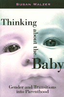

<body bgcolor="#FFFFFF" text="#000000" link="#0000FF" vlink="#CC0000" alink="#CC0000"><center><hr width="350" size="1" align="center" noshade>Interviews with new parents about the gendered roles of mother and father<hr width="350" size="1" align="center" noshade><p><a href="https://cdcshoppingcart.uchicago.edu/Cart/ChicagoBook.aspx?ISBN=9781566396301&&PRESS=temple" target="_top">Buy this book!</a> | <a href="https://cdcshoppingcart.uchicago.edu/Cart/Cart.aspx?PRESS=temple" target="_top">View Cart</a> | <a href="https://cdcshoppingcart.uchicago.edu/Cart/Cart.aspx?PRESS=temple" target="_top">Check Out</a></p><p></p></center><!--none//--><h1>Thinking about the Baby</h1>
<H2>Gender and Transitions into Parenthood</H2>
<h3>Susan Walzer</h3>
<P>cloth 1-56639-630-1 $59.50, Aug 98, <FONT COLOR=#990033>Out of Stock Unavailable</FONT>
<br>paper 1-56639-631-X $27.95, Aug 98, <FONT COLOR=#990033>Available</FONT>
<br>Electronic Book 1-59213-824-1 $27.95 <FONT COLOR=#990033>Out of Stock Unavailable</FONT>
<BR> 224 pp
5.5x8.25
</P><p>Many new mothers and fathers are surprised at how they change as individuals and as couples after a baby is born. Susan Walzer's interviews explore the tendency for men and women to experience their transitions into parenthood in different ways-a pattern that has been linked to marital stress.
<p>How do new mothers and fathers think about babies, and what is the influence of parental consciousness in reproducing motherhood and fatherhood as different experiences? The reports of new parents in this book illustrate the power of gendered cultural imagery in how women and men think about their roles and negotiate their parenting arrangements.
<p>New parents talk about what it means to them to be a "good" mother or father and how this plays out in their working arrangements and their everyday interactions over child care. The author carefully unravels the effects of social norms, personal relationships, and social institutions in channeling parents toward gender-differentiated approaches to parenting.
<BR>&nbsp;<h2>Excerpt</h2><P>Excerpt available at <a href="http://www.temple.edu/tempress">www.temple.edu/tempress</a></p>
<BR>&nbsp;<h2>Contents</h2><P>
<p>Acknowledgments
<br>1. Becoming Mothers and Fathers
<br>2. Parental Consciousness and Gender
<br>3. "Good" Mothers and Fathers
<br>4. Bonding with the Baby: Biology and Social Meanings
<br>5. As a Wife and a Mother: Marriage and Approaches to New Parenthood
<br>6. Images of Family
<br>7. Employment, Child Care, and Parental Accountability
<br>8. Conclusion
<br>Notes
<br>References
<br>Index
</P><BR>&nbsp;<H2>About the Author(s)</H2>
<table><tr><td valign="top"><img src="/tempress/authors/1383_au.gif" height="90" width="75"></td><td width="100%" valign="middle"><p><B>Susan Walzer</B> is Assistant Professor of Sociology at Skidmore College.</P></td></tr></table>
<BR><H2>Subject Categories</H2>
<p><A HREF="/tempress/women.html" TARGET="_top">Women's Studies</a>
<BR><A HREF="/tempress/family.html" TARGET="_top">Family Policy</a>
<BR><A HREF="/tempress/sociology.html" TARGET="_top">Sociology</a>
</p>
<BR><h2 class="inpageheading">In the series</H2>
<P><I><a href="http://www.temple.edu/tempress/women_political.html" onMouseOver="window.status='Click for other books in this series!'; return true;" onMouseOut="window.status=''; return true;" target="_top">Women in the Political Economy</a></i>, edited by Ronnie J. Steinberg.
</p><p>No longer active.<p><i>Women in the Political Economy</i>, edited by Ronnie J. Steinberg, includes books on women and issues of work, family, social movements, politics, feminism, and empowerment. It emphasizes women's roles in society and the social construction of gender and also explores current policy issues like comparable worth, international development, job training, and parental leave.</p>
<p align="center"><a href="https://cdcshoppingcart.uchicago.edu/Cart/ChicagoBook.aspx?ISBN=9781566396301&&PRESS=temple" target="_top">Buy this book!</a> | <a href="https://cdcshoppingcart.uchicago.edu/Cart/Cart.aspx?PRESS=temple" target="_top">View Cart</a> | <a href="https://cdcshoppingcart.uchicago.edu/Cart/Cart.aspx?PRESS=temple" target="_top">Check Out</a></p><p><font face="Arial" size="1"><a href="copyright.html" onMouseOver="window.status='Web Copyright Policy';return true;" onMouseOut="window.status=''" title="Web Copyright Policy">&copy;</a> 2015 <a href="http://www.temple.edu" target="new" onMouseOver="window.status='Link to Temple University home page';return true;" onMouseOut="window.status=''" title="Link to Temple University home page">Temple University</a>. All Rights Reserved. http://www.temple.edu/tempress/titles/1383_reg.html</font></p>